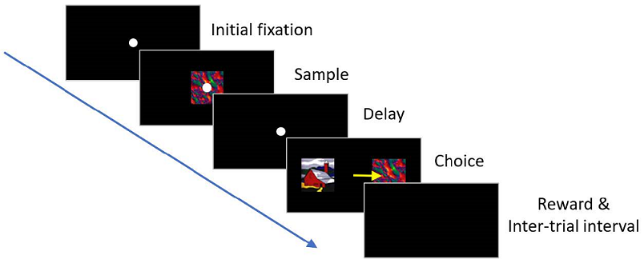
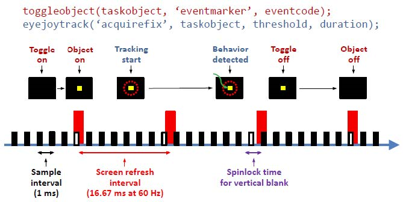
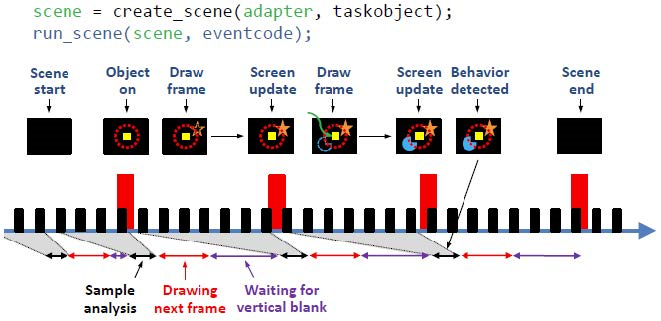
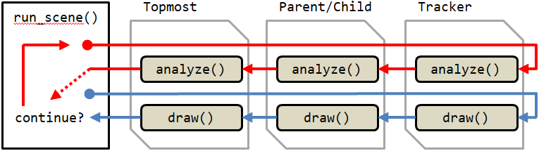

The National Institute of Mental Health (NIMH) is part of the National Institutes of Health (NIH), a component of the U.S. Department of Health and Human Services.
The best way to learn how to write a task is to modify one of the many examples found in the "task" folder of the NIMH ML installation directory.
NIMH ML requires two files to run a task: conditions file & timing script. However, the conditions file can be replaced with a userloop function and there are two ways to write timing scripts (version 1 and version 2). So there are a total of four ways to create a task
The conditions file is a text file that specifies possible combinations of stimuli ("TaskObjects") within a trial. Each combination defines a "condition". During experiment execution, different conditions are selected to run as determined by the options in the Task submenu. Conditions can be grouped into blocks and selected collectively. The rule of selecting/switching blocks can also be determined on the menu as well (see [Blocks] pane).
Below is an example of a conditions file for a delayed match-to-sample (DMS) task using a total of 4 picture stimuli (A, B, C and D). A DMS task requires a subject to remember the sample stimulus and identify it from a set of stimuli presented subsequently. In this version, a trial begins with an eye fixation. When the subject successfully fixates on the white circle shown at the center of the screen, an image ("sample") is displayed briefly, turned off and followed by a delay period. At the end of the delay period, two images ("sample" and "distractor") are presented on either side of the screen and the subject is required to indicate a choice by making a saccade eye movement to the chosen target. If the choice matches the sample image, a reward is delivered. Then, an inter-trial interval begins. The conditions file for this task includes TaskObjects that represent the fixation dot, the sample image and the distractor image.

The conditions file consists of a header followed by consecutively numbered conditions. All columns are tab-delimited, which means that the columns are distinguished by tabs. It is a very common mistake to use spaces between columns, instead of tabs. Be certain to use tabs.
| Condition | Info | Frequency | Block | Timing File | TaskObject#1 | TaskObject#2 | TaskObject#3 | TaskObject#4 |
| 1 | 'samp','A','match',-1 | 1 | 1 3 | dms | fix(0,0) | pic(A,0,0) | pic(A,-4,0) | pic(B,4,0) |
| 2 | 'samp','A','match',1 | 1 | 1 3 | dms | fix(0,0) | pic(A,0,0) | pic(A,4,0) | pic(B,-4,0) |
| 3 | 'samp','B','match',-1 | 1 | 1 3 | dms | fix(0,0) | pic(B,0,0) | pic(B,-4,0) | pic(A,4,0) |
| 4 | 'samp','B','match',1 | 1 | 1 3 | dms | fix(0,0) | pic(B,0,0) | pic(B,4,0) | pic(A,-4,0) |
| 5 | 'samp','C','match',-1 | 1 | 2 3 | dms | fix(0,0) | pic(C,0,0) | pic(C,-4,0) | pic(D,4,0) |
| 6 | 'samp','C','match',1 | 1 | 2 3 | dms | fix(0,0) | pic(C,0,0) | pic(C,4,0) | pic(D,-4,0) |
| 7 | 'samp','D','match',-1 | 1 | 2 3 | dms | fix(0,0) | pic(D,0,0) | pic(D,-4,0) | pic(C,4,0) |
| 8 | 'samp','D','match',1 | 1 | 2 3 | dms | fix(0,0) | pic(D,0,0) | pic(D,4,0) | pic(C,-4,0) |
The Info column is used here to pass labels to the timing file about which image is the sample and where on the screen the matching image will be displayed; this column is intended to make deciphering the conditions easier for the user, and does not affect actual task execution. Users can access this information in the timing script, like Info.samp and Info.match. This column is optional and may be deleted from the header.
The Frequency column is the weight or likelihood of that particular condition will be selected relative to other conditions. For example, if a condition has a frequency of 3, it has 3 times more chance of being selected than a condition with a frequency of 1.
In the Block column, the numbers correspond to those blocks in which each condition can appear. Here, for instance, Block 1 is composed of Conditions 1-4 in which Images A and B are used and Block 2 has Conditions 5-8 in which Images C and D are used. Block 3 uses all of them. Therefore, if the user chooses to run only Block 1 from the main menu (or if that block is selected on-line during task execution by pre-specified criteria), only Conditions 1-4 will constitute the pool of possible conditions. Running block 3, on the other hand, will allow all conditions (1 through 8) to be placed into the selection pool. Note that 1 and 3 (or 2 and 3) are separated by a space in the Block column, not a tab.
The Timing File refers to the timing script (MATLAB m-file) which calls up each stimulus and checks for fixation, target acquisition, etc. Each condition can be associated with a different timing file, if desired. See below for how to write timing files.
TaskObjects are identified by their columnar locations (i.e., TaskObject numbers). They consist of three-letter symbols (fix, pic, mov, crc, sqr, snd, stm, ttl and gen) and parameters for their generation or display (see TaskObjects for details). To add more TaskObjects in a trial, add more TaskObject columns to the header.
The conditions file requires defining all trial conditions explicitly. This may not be convenient sometimes, for example, when there are so many conditions and stimuli or when the task needs a flexible way of randomizing trial sequences and handling error trials.
The userloop function is a MATLAB function that feeds the information necessary to run the next trial, in lieu of the conditions file. It is called before each trial starts and allows users to determine which TaskObject and which timing script should be used for the upcoming trial on the fly.
The first return value, "C", is a cell array that contains TaskObjects.
The second return value ("timingfile") is the name(s) of the timing file(s). Note that the very first call to this function is made before the pause menu shows up and it is for retrieving all the timing file names that will be used. So there is no need to fill the TaskObject list ("C"), if it is the first call. The above code provides a tip for how to exit the function early without the TaskObject list. To use multiple timing scripts, put their names in a cell char array and assign it to "timingfile". Except the very first call, return only one timing script name for that particular condition.
The third argument ("userdefined_trialholder") is reserved for custom runtime functions and should be empty.
To pass any custom value to the timing script, assign it under the TrialRecord.User structure. Retrive the value in the timing file as shown below.
With the userloop function, it is possible to preload large stimuli and reuse them. Reuse can avoid unwanted increases in the inter-trial interval for stimulus creation. The details of the userloop function are well-documented in the example tasks that are under the "task\userloop" directory of the ML installation folder.
Task sequences can be programmed with plain MATLAB scripts ("timing scripts") using a rich set of functions for stimulus presentation and behavior monitoring. Some functions (called "timing script functions") are available only while the timing scripts are executed. Native MATLAB commands and functions can be used as well. For the complete list of all timing script functions, see "Timing script functions & Command window functions".
The timing script functions of the timing script v1 are written to be compatible with those of the original MonkeyLogic. One major difference between NIMH ML and the original ML is in how movies are played. The original ML shows one movie frame per each refresh cycle, irrespective of the frame rate of the movie. As a result, the duration of a movie changes depending on the refresh rate of the monitor. NIMH ML determines the next frame based on the frame rate and the elapsed time so that the speed of the playback can be independent of the monitor refresh rate. To play movies as the original ML does, see the description of MOV in the TaskObject manual.
In the conditions file example above, each condition defines 4 TaskObjects (fixation cue, sample, match and distractor) and they are controlled by the "dms" timing script. The following code snippet is a piece from the "dms" script and shows how to present TaskObject#1 and track eye movements. The complete script is in the "task\runtime v1" directory of NIMH ML.
Two timing script functions, toggleobject and eyejoytrack are used. toggleobject turns on and off TaskObject(s) ("1" that indicates TaskObject#1 is colored in red) and eyejoytrack tests if eye fixation is acquired and maintained.
The same experiment can be scripted differently by using the timing script v2 (a.k.a. scene framework). The entire code of this example is in the "task\runtime v2\1 dms with new runtime" directory.
In the timing script v2, toggleobject and eyejoytrack are replaced with two new functions, create_scene and run_scene. create_scene receives an "adapter" as an input argument and returns a "scene" struct. This scene struct, in turn, becomes the input argument of run_scene.
The "adapter" is a MATLAB class object and a building block of a scene. The rest of this document explains what is the idea behind the scene framework and how to use the adapters.
In the timing script v1, stimulus presentation and behavior tracking are handled by toggleobject and eyejoytrack, respectively. This approach is not ideal for designing dynamic, interactive stimuli, for the following reasons.

The timing script v2 takes a different approach. In this new framework, behavior tracking and stimulus presentation are both handled by one function, run_scene. In addition, samples collected during one refresh interval are all analyzed together at the beginning of the next refresh interval and the screen is redrawn based on the sample analysis.

Therefore, the cycle of [analyzing samples]-[drawing screen]-[presenting] is repeated each frame and, by tapping into this cycle, we evaluate the behavior and then decide what to display on the upcoming frame.
A disadvantage of this new approach is not knowing when the behavior occurred until the next frame begins. (See the time of the behavior occurrence, the green arrow, and the time of behavior detection in the above figure.) However, this is often not a serious issue for the following reasons.
In spite of some limitations, the new approach has advantages in dynamic, precise frame-by-frame control of visual stimuli. In fact, it is the way most of game software handles graphics.
In the scene framework, a task is built by combining small blocks, called adapters, into scenes and executing them according to the task scenario and the subject's response.
An adapter is a MATLAB class object designed to perform a simple action, like detecting a behavior pattern or drawing an object.
Each adapter has two member functions, analyze() and draw(). These functions are called by run_scene() during each frame.
Multiple adapters can be concatenated as a chain to do more complex jobs. There are >40 built-in adapters available and users can craft custom adapters from the provided template (see the "ext\ADAPTER_TEMPLATE.m" file).
Each adapter has the Success property, by default, which typically indicates whether the target behavior is detected or not. Adapters can also have other custom properties to show the results of analysis performed during scenes.

All adapter chains must start with a special adapter called Tracker. There are currently 8 trackers in NIMH ML and they are pre-defined with reserved names: eye_, eye2_, joy_, joy2_, touch_, button_, mouse_ and null_. Each tracker reads new data samples from the device that its name designates. null_ does not read any data.
To be linked as a chain, one adapter should be an input argument of another adapter's constructor. The one that becomes the input argument is the child adapter and the one that takes the child adapter is the parent adapter. The one that is at the end of a chain (the opposite end to the tracker) is the topmost adapter and the topmost adapter becomes the argument of the create_scene function.
All input properties of adapters should be assigned/adjusted before the create_scene function is called, because create_scene stores their initial values to reconstruct the scene for later replay. In addition, it is best to created all scenes before any run_scene is called so that there is no initialization delay once the task begins. Therefore, the prefered order of writing a scene script is:
Adapter chains begin to work when they are called by the run_scene function in the timing script. Nothing is presented until run_scene is called.
A scene is finished when the topmost adapter stops. The stop condition is different from adapter to adapter, but, when connected as a chain, only the stop condition of the topmost adapter matters.
When programing an adapter of your own, the child adapter can be accessed via the Adapter property of the current adapter.
In the scene framework, adapters are linked as a chain to do complex jobs (for example, acquiring eye positions + checking eye fixation). In addition, multiple chains can be combined into a macro chain with aggregator adapters such as AndAdapter, OrAdapter, AllContinue and AnyContinue. When creating a macro chain, it is even more critical to think through what is the condition that the chain has to meet to finish the scene.
The code snippet below is an example of a macro chain composed of two child chains: one that checks button press (colored in red) and one that monitors eye positions (in blue). SingleButton and SingleTarget succeed when the button #1 is pressed and eye is on (-5, 5), respectively, and OrAdapter succeeds when any child chain succeeds. Therefore, the scene ends when either button press or eye fixation is acquired.
Since the above scene does not have a timer component, it waits for user input indefinitely. We can add WaitThenHold to the second chain, to make the scene finish after a certain period, like the following.
It may look perfect now, but this scene will not end even if there is no user input for 3 s. It is because WaitThenHold may stop with or without a success (i.e., with or without eye fixation) but stopping without a success does not satisfy OrAdapter.
To make the scene work as we intended, we need to use a different aggregator that watches the stop states of child chains, instead of the success states.
AllContinue stops when any of its child chain stops, regardless of their success states. Therefore the scene will end whether WaitThenHold is finished by eye fixation or by time out. AndAdapter and OrAdapter monitor the success states of their child chains; AllContinue and AnyContinue, the stop states.
As shown in these examples, it should be considered carefully whether to use the success state or the stop state to finish a scene when designing a complex macro chain. The success and stop conditions of each adapter are explained in the timing script function manual. Also check out other special aggregators, such as Concurrent and Sequential, in the manual.
What happened during a scene can be read out from each adapter's properties. In the last code snippet shown above, for example, the scene can be stopped either by button press, eye fixation, or time out and we want to know which one is it. Then, after run_scene(), we can check the Success property of each adapter, like the following.
If wth.Success is true, it means that eye fixation was acquired within 3 s. If not, it must be button press or time out that terminated the scene, which we can determine by testing btn.Success.
TaskObjects created with the conditions file will operate in the scene framework, although stimuli created with adapters (BoxGraphic, CircleGraphic, etc.) are an alternative. TaskObjects and adapter stimuli are nearly the same in every way, except the onset of adapter stimuli can be delayed until a a specified event occurs.
To make an adapter stimulus triggered by an event, set its Trigger property true and add a child adapter. The stimulus will be presented when the Success property of the child becomes true. For example, TriggerTimer will make a stimulus presented when the timer expires.
This section is for those who want to write their own adapters. All adapters have four common member functions: init, analyze, draw and fini (for the role of each function, see the ext/ADAPTER_TEMPLATE.m file). They all receive the same input argument, p, which is an instantiation of the RunSceneParam class. It has many useful methods, including access to some timing script functions within the adapter.
elapsed_time = p.scene_time();
frame_no = p.scene_frame();
p.eventmarker(eventcodes);
The following functions are the same functions used in the timing file.
p.trialtime();
p.goodmonkey(duration,
p.dashboard(line_no,text,color);
p.DAQ.eventmarker(eventcodes);
To call goodmonkey() inside the adapter, you will have to use the 'nonblocking' option together. Otherwise, the scene will be paused until the reward delivery is finished.
The difference between p.eventmarker() and p.DAQ.eventmarker() is that the former stamps eventcodes when the next frame starts but the latter does immediately.
The National Institute of Mental Health (NIMH) is part of the National Institutes of Health (NIH), a component of the U.S. Department of Health and Human Services.